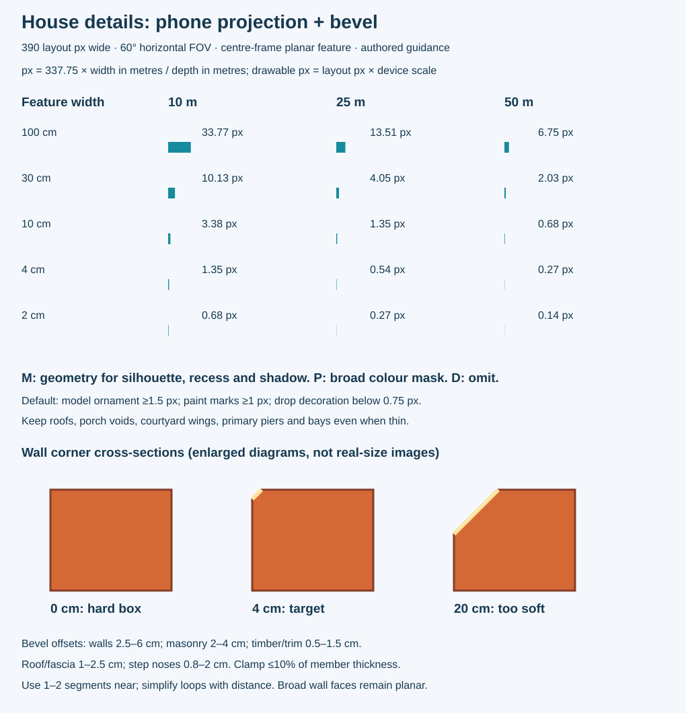
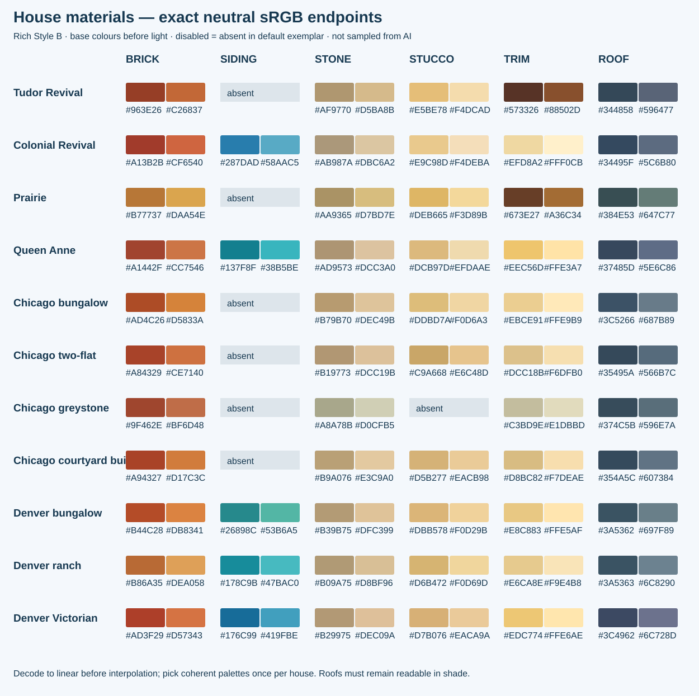

House details · Style B
Rich stylized family references at up to 390 layout pixels per panel. Architecture and broad light/colour are the targets. Read the construction guide and exact material JSON. Generated concepts are not measured engine captures.
Exact distance and bevel guide

Exact material ranges
Open the colour chart full size for hex labels.
